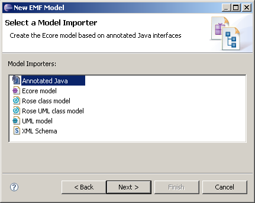

The QVT Rose UML Importer supports conversion of a UML model defined by class diagrams in an IBM Rational Rose MDL file to Ecore or EMOF files suitable for use with EMF and other modeling tools.
Subtle but critical differences between the Rose UML Importer and the Rose Importer that forms part of EMF are discussed below.
The QVT Rose UML Importer supports two interactive modes of operation.
The traditional Import model behavior is available, when loading a genmodel as part of EMF model or project creation, or when reloading a genmodel.
An alternative conversion action is available for MDL files.
The traditional import is also available as a standalone program or Ant task for those skilled in resolving Eclipse class paths (see readme.html).
The standard EMF Rose Importer does not define EReference.ordered so it takes the Ecore default which is ordered.
The QVT RoseUML Importer sets EReference.ordered according to the presence of the ordered keyword as one of the constraints on an Association. For unit upper-bound features ordered is enforced.
[This is arguably a bug fix, however the Rose Importer behavior is well-established. Fixing this bug would have widespread albeit probably trivial impact on existing clients and so failure to observe the ordered constraint is a feature not a bug.]
The standard EMF Rose Importer generates a pair of mutually opposite EReferences for bidirectional associations and a single EReference for unidirectional associations. This is appropriate for code generation style use of the subsequent model, but, because it discards the role name and multiplicity of the opposite end, it is inadequate for meta-modelling purposes.
The QVT Rose UML Importer, when invoked as a conversion action, provides the missing unnavigable role name as an EMOF comment or as an Ecore EAnnotation in accoradnce with the parctice defined by Bugzilla 229998.
The standard EMF Rose Importer generates names for missing roles from the associated type.
The QVT Rose UML Importer does the same but converts the first letter to lowercase as required by OCL 06-05-01 7.5.3 Missing AssocoiationEnd names.
The traditional Import model behavior is available when creating a genmodel as part of a new EMF model (e.g. New->Other...->EMF Modeling Framework->EMF Model) or project (e.g. New->Project...->EMF Modeling Framework->EMF Model), and when reloading the genmodel (Reload... from the *.genmodel context-sensitive menu).

The Rose UML behavior differs by observing ordered constriants.
The action initiates loading of the model.mdl and generation of:
Three distinct packaging options
Three distinct unidirectional association representation options
This facility was developed to support the OMG QVT 1.0 specification, for which EMOF is needed to support OMG standards and Ecore as a convenience for many users.
The one file per package and all packages in one file formats provide alternatives for slightly defective tools that may have problems with multi-package meta-models. The flattened representation gives a further option for very defective tools.
QVT requires that all associations are navigable in both directions for the purposes of transformation pattern matching. This conflicts with the conventional EMF usage in which non-navigable ends of associations have no corresponding EReference to define their roles and multiplicities. The three navigability representations provide the traditional minimal representation for code generation, and an exact representation for transformation pattern matching. Since the exact representation uses asymmetric opposites, it may cause trouble for some tools. A further option in which all associations are bidirectional is provided for these tools.
The QVT models with enhanced navigability add additional EReferences to EMOF and EssentialOCL classes, and comply with the EMOF specification of a PrimitiveTypes package. The http://schema.omg.org/spec/mof/2.0/emof.xml is used for a combined EMOF and PrimitiveTypes package. Therefore if the source UML model contains an EMOF and a PrimitiveTypes package, a further set of Ecore files are generated in the traditionalEcore folder. These files omit non-navigable EReferences and the PrimitiveTypes package whose contents are moved to the EMOF package. Additionally the namespace of the EMOF package is changed to http://schema.omg.org/spec/MOF/2.0/emof.xml.